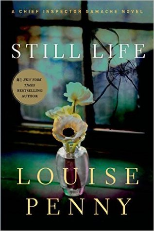

Still Life, by Louise Penny
Saturday February 12, 2022
Put on your Sony ‘Discman’ and grab your palm pilot, because it's Louise Penny's first book featuring Chief Inspector Armand Gamache (read "Galonche") from 2006!
‘Life is change. If you aren’t growing and evolving you’re standing still, and the rest of the world is surging ahead. Most of these people are very immature. They lead “still” lives, waiting.’ (Myrna, page 140)
I would be very pleased if I wrote a book as good as this. It's charming fun with a bit of morality play blended in.
‘We choose our thoughts. We choose our perceptions. We choose our attitudes. We may not think so. We may not believe it, but we do. I absolutely know we do. I’ve seen enough evidence, time after time, tragedy after tragedy. Triumph after triumph. It’s about choice.’ (Gamache, page 80)
Stoic? Positive psychology? Right wing?
There's little sympathy for men's-rights-style whining:
"We’re not respected just by virtue of being English. It’s not the same thing. Do you have any idea how much our lives have changed in the last twenty years? All the rights we’ve lost?" (Ben Hadley, page 50)
I enjoyed the art world dalliance, which reminded me somewhat of the end of Vonnegut's Bluebeard. And Nichol! Who's never been Nichol? So awful! So fun to hate, and/or pity.
I collected things of varying degrees of Canadianness that I looked up. (Do compound bows have built-in triggers in Montreal?)
- as hard as the Canadian Shield: a large area of exposed Precambrian rock
- beaver stick: just what it sounds like
- Canadiens: the Montreal hockey team
- cured Canadian bacon: but they mean regular bacon
- dépanneur: A convenience store, especially one that sells alcohol (in Quebec)
- Eaton's catalogue: one of the first mail-order catalogs distributed by a Canadian retail store
- He’s a Golden Mile boy: refers to a rich area of Montreal
- Inspector Clouseau: The Chief Inspector from The Pink Panther
- Inuk island: apparently Inuk is interchangeable with Inuit? Is this a specific place?
- "Lee Valley catalogue": "Lee Valley Tools Ltd. is a Canadian business specializing in tools and gifts for woodworking and gardening."
- Lune Moon: a funny Canadian snack cake
- ‘May I have his co-ordinates, please?’ (page 61) was asking for a person's location. Is this a common phrasing?
- Méteo Media: "a Canadian French-language weather information specialty channel and web site"
- tabarouette, tabarnouche: "Mild version of french-canadian curse word tabarnak."
- Tabernacle: This is a curse, somehow?
- tête carrée: "square head" / blockhead
- three extra large ‘All Dressed’ from Pizza Pizza: "Montreal slang for the works"
- tins of soft drinks: Is this what they say in Quebec?
- toques: normal winter hats, but in Canada (read "tooks")
- to twig: To realise something; to catch on; to recognize someone or something (British?)
- village cozy: A mystery genre referenced by a character. Still Life is pretty close to a village cozy.
- ‘yes yes’ cookies: Apparently these are like the Girl Scouts' "Somoas"
